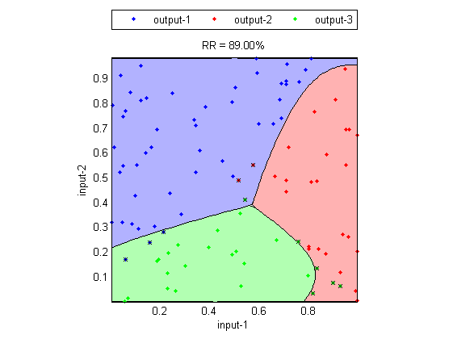
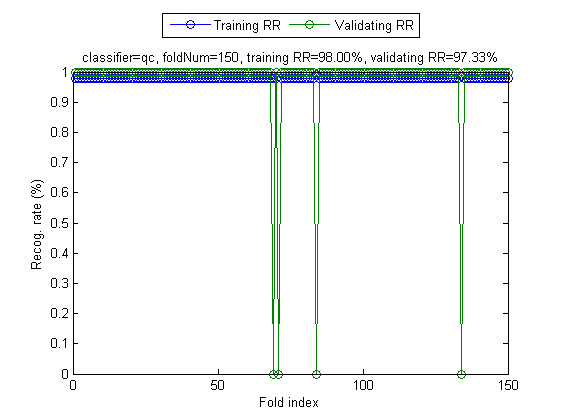
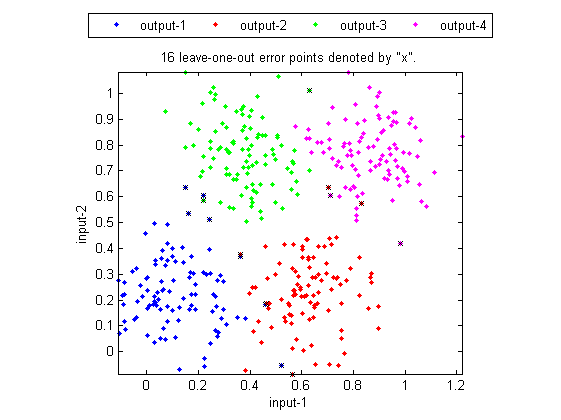

Performance Evaluation for Data Classification
Once we have constructed a classifier using a certain pattern recognition method, we need to objectively evaluate its performance in terms of the recognition rate. In general, there are several ways to do performance evaluation, as described next.
Contents
Inside-test recognition rate (resubstitution recognition rate)
If we use the same dataset for both training and test, then the obtained recognition rate is referred to as the inside-test recognition rate or the resubstitution recognition rate. This inside-test result is usually overly optimistical since all data is used for training and the test is also based on the same data. In particular, if we use 1-NNR for our classifier, then the inside-test recognition rate will always be 100%. The following example gives the inside-test recognition rate of the "3classes" dataset using the quadratic classifier:
DS=prData('3classes'); [prm, logLike, rr, hitIndex]=qcTrain(DS); DS.hitIndex=hitIndex; % Attach hitIndex to DS for plotting qcPlot(DS, prm, 'decBoundary'); fprintf('Inside-test recognition rate = %.2f%%\n', rr*100);
Inside-test recognition rate = 89.00%
Though the inside-test recognition rate is not objective, it can serve as the upper-bound of the true recognition rate. In general, we use the inside-test recognition rate as a first step for examining our classifier. If the inside-test recognition rate is already low, there are two possible reasons:
- The design method for the classifier is not good enough.
- The features of the training set do not have good discrinimative power.
However, if the inside-test recognition rate is high, it does not mean we have reach a reliable classifier. Usually we need to prepare a set of "unseen" data to test the classifier, as explained next.
Outside-test recognition rate (holdout recognition rate)
After a classifier is constructed, usually it will face unseen data for further application. Therefore it is better to prepare a set of "unseen" data for evaluating the recognition rate of the classifier. In practice, we usually divide the available data set into two disjoint part of a training set and a test set. The training set is used for designing the classifier, while the test set is used for evaluating the recognition rate of the classifier. The obtained recognition rate is referred to as the outside-test recognition rate or the holdout recognition rate, with the following characteristics:
- Since the test set is not used for designing the classifier, the obtained recognition rate is more objective.
- Since the available data set is of limited size in the real world, the outside-test recognition rate is a little bit lower than the true recognition rate since a part of the data set is set aside for test.
- The complexity of a classifier is defined as the number of free parameters in the classifier. In general, the inside-test recognition goes up with the complexity of the classifier. On the other hand, the outside-test recognition rate goes up with the complexity of the classifier initially, but then goes down afterwords due to over-training. Usually we select the number of free parameters of a classifier which can optimize the outside-test recognition rate.
- After we set up the complexity of the classifier, we can then use the whole dataset for training. We can expect the true recognition rate of the thus-constructed classifier should be a little bit higher than the optimum outside-test recognition rate mentioned earlier.
The following example gives both the inside-test and outside-test recognition rates of the "3classes" dataset using the quadratic classifier:
[DS, TS]=prData('3classes'); [qcPrm, logLike, rrDs, hitIndex]=qcTrain(DS); fprintf('Inside-test recog. rate = %g%%\n', rrDs*100); cOutputTs=qcEval(TS, qcPrm); rrTs=sum(TS.output==cOutputTs)/length(TS.output); fprintf('Outside-test recog. rate = %g%%\n', rrTs*100);
Inside-test recog. rate = 96% Outside-test recog. rate = 88%
M-fold cross validation
We can extend the concept of outside test to have the so-called two-fold cross validation or two-way outside-test recognition rate. Namely, we can divide the data set into part A and B of equal size. In the first run, we use part A as the training set and part B as the test set. In the second run, we reverse the roles of part A and B. The overall recognition rate will be the average of these two outside-test recognition rates.
In two-fold cross validation, the dataset is divided into two equal-size parts, which lead to slight lower outside-test recognition rates since each classifier can only use 50% of the dataset. In order to estimate the recognition rate better, we can have m-fold cross validation in which the dataset is divided into m subsets of about equal size. Then we estimate the recognition rate according to the following steps:
- Use subset i as the test set, while all the others as the training set to design a classifier. Test the classifier using subset i to obtain the outside-test recognition rate.
- Repeat the above step for each i, i = 1 to m. Compute the overall average outside-test recognition rate.
The following example using the command crossValidate to partition the dataset into 10 folds in order to compute the 10-fold cross validation:
DS=prData('iris'); cvPrm.nFolds=10; % 10 folds cvPrm.classifier='qc'; % Quadratic classifier plotOpt=1; figure; [tRrMean, vRrMean, tRr, vRr]=crossValidate(DS, cvPrm, plotOpt);
Fold = 1/150 Fold = 2/150 Fold = 3/150 Fold = 4/150 Fold = 5/150 Fold = 6/150 Fold = 7/150 Fold = 8/150 Fold = 9/150 Fold = 10/150 Fold = 11/150 Fold = 12/150 Fold = 13/150 Fold = 14/150 Fold = 15/150 Fold = 16/150 Fold = 17/150 Fold = 18/150 Fold = 19/150 Fold = 20/150 Fold = 21/150 Fold = 22/150 Fold = 23/150 Fold = 24/150 Fold = 25/150 Fold = 26/150 Fold = 27/150 Fold = 28/150 Fold = 29/150 Fold = 30/150 Fold = 31/150 Fold = 32/150 Fold = 33/150 Fold = 34/150 Fold = 35/150 Fold = 36/150 Fold = 37/150 Fold = 38/150 Fold = 39/150 Fold = 40/150 Fold = 41/150 Fold = 42/150 Fold = 43/150 Fold = 44/150 Fold = 45/150 Fold = 46/150 Fold = 47/150 Fold = 48/150 Fold = 49/150 Fold = 50/150 Fold = 51/150 Fold = 52/150 Fold = 53/150 Fold = 54/150 Fold = 55/150 Fold = 56/150 Fold = 57/150 Fold = 58/150 Fold = 59/150 Fold = 60/150 Fold = 61/150 Fold = 62/150 Fold = 63/150 Fold = 64/150 Fold = 65/150 Fold = 66/150 Fold = 67/150 Fold = 68/150 Fold = 69/150 Fold = 70/150 Fold = 71/150 Fold = 72/150 Fold = 73/150 Fold = 74/150 Fold = 75/150 Fold = 76/150 Fold = 77/150 Fold = 78/150 Fold = 79/150 Fold = 80/150 Fold = 81/150 Fold = 82/150 Fold = 83/150 Fold = 84/150 Fold = 85/150 Fold = 86/150 Fold = 87/150 Fold = 88/150 Fold = 89/150 Fold = 90/150 Fold = 91/150 Fold = 92/150 Fold = 93/150 Fold = 94/150 Fold = 95/150 Fold = 96/150 Fold = 97/150 Fold = 98/150 Fold = 99/150 Fold = 100/150 Fold = 101/150 Fold = 102/150 Fold = 103/150 Fold = 104/150 Fold = 105/150 Fold = 106/150 Fold = 107/150 Fold = 108/150 Fold = 109/150 Fold = 110/150 Fold = 111/150 Fold = 112/150 Fold = 113/150 Fold = 114/150 Fold = 115/150 Fold = 116/150 Fold = 117/150 Fold = 118/150 Fold = 119/150 Fold = 120/150 Fold = 121/150 Fold = 122/150 Fold = 123/150 Fold = 124/150 Fold = 125/150 Fold = 126/150 Fold = 127/150 Fold = 128/150 Fold = 129/150 Fold = 130/150 Fold = 131/150 Fold = 132/150 Fold = 133/150 Fold = 134/150 Fold = 135/150 Fold = 136/150 Fold = 137/150 Fold = 138/150 Fold = 139/150 Fold = 140/150 Fold = 141/150 Fold = 142/150 Fold = 143/150 Fold = 144/150 Fold = 145/150 Fold = 146/150 Fold = 147/150 Fold = 148/150 Fold = 149/150 Fold = 150/150 Training RR=98.00%, Validating RR=97.33%, classifier=qc, no. of folds=150
Leave-one-out test
When m is equal to the size of the dataset, we have the so-called leave-one-out method (also known as the jackknife procedure) which is the most objective method for recognition rate estimate since almost all the data (except one entry) is used for constructing the classifier. The obtained recognition rate is known as the leave-one-out (LOO for short) recognition rate. The leave-one-out method has the following characteristics:
Each classifier uses almost all the dataset (except one entry), therefore the outside-test recognition rate should be able to approach the true recognition rate closely. For classifiers that require massive computation in the design stage (such as artificial neural networks, Gaussian mixture models), the leave-one-out method is impractical for a moderate dataset. Since the leave-one-out method require a lot more computation, usually we only choose a simple classifier such as KNNC for estimating the LOO recognition rate. The obtained LOO recognition rate can help us have a rough idea of the discriminating power of the features in the dataset.
In the following example, we use the function knncLoo.m to find the LOO recognition rates of "random2" dataset using 1-NNR. Each misclassified data point is labeled with a cross for easy visual inspection, as follows:
DS=prData('random2');
dsScatterPlot(DS);
knncPrm.k=1;
plotOpt=1;
clf; [recogRate, computed, nearestIndex]=knncLoo(DS, knncPrm, plotOpt);
 The function knncLoo.m is efficient in computing the LOO recognition rate of 1-NNC. For a more sophisticated classifier, the LOO test is usually time consuming. By setting the no. of folds to be inf, the following example employs the command crossValidate to compute the LOO recognition rate of the Iris dataset using the quadratic classifier:
DS=prData('iris'); cvPrm.nFolds=inf; % for leave-one-out cvPrm.classifier='qc'; % Quadratic classifier plotOpt=1; figure; [tRrMean, vRrMean, tRr, vRr]=crossValidate(DS, cvPrm, plotOpt);
Fold = 1/150 Fold = 2/150 Fold = 3/150 Fold = 4/150 Fold = 5/150 Fold = 6/150 Fold = 7/150 Fold = 8/150 Fold = 9/150 Fold = 10/150 Fold = 11/150 Fold = 12/150 Fold = 13/150 Fold = 14/150 Fold = 15/150 Fold = 16/150 Fold = 17/150 Fold = 18/150 Fold = 19/150 Fold = 20/150 Fold = 21/150 Fold = 22/150 Fold = 23/150 Fold = 24/150 Fold = 25/150 Fold = 26/150 Fold = 27/150 Fold = 28/150 Fold = 29/150 Fold = 30/150 Fold = 31/150 Fold = 32/150 Fold = 33/150 Fold = 34/150 Fold = 35/150 Fold = 36/150 Fold = 37/150 Fold = 38/150 Fold = 39/150 Fold = 40/150 Fold = 41/150 Fold = 42/150 Fold = 43/150 Fold = 44/150 Fold = 45/150 Fold = 46/150 Fold = 47/150 Fold = 48/150 Fold = 49/150 Fold = 50/150 Fold = 51/150 Fold = 52/150 Fold = 53/150 Fold = 54/150 Fold = 55/150 Fold = 56/150 Fold = 57/150 Fold = 58/150 Fold = 59/150 Fold = 60/150 Fold = 61/150 Fold = 62/150 Fold = 63/150 Fold = 64/150 Fold = 65/150 Fold = 66/150 Fold = 67/150 Fold = 68/150 Fold = 69/150 Fold = 70/150 Fold = 71/150 Fold = 72/150 Fold = 73/150 Fold = 74/150 Fold = 75/150 Fold = 76/150 Fold = 77/150 Fold = 78/150 Fold = 79/150 Fold = 80/150 Fold = 81/150 Fold = 82/150 Fold = 83/150 Fold = 84/150 Fold = 85/150 Fold = 86/150 Fold = 87/150 Fold = 88/150 Fold = 89/150 Fold = 90/150 Fold = 91/150 Fold = 92/150 Fold = 93/150 Fold = 94/150 Fold = 95/150 Fold = 96/150 Fold = 97/150 Fold = 98/150 Fold = 99/150 Fold = 100/150 Fold = 101/150 Fold = 102/150 Fold = 103/150 Fold = 104/150 Fold = 105/150 Fold = 106/150 Fold = 107/150 Fold = 108/150 Fold = 109/150 Fold = 110/150 Fold = 111/150 Fold = 112/150 Fold = 113/150 Fold = 114/150 Fold = 115/150 Fold = 116/150 Fold = 117/150 Fold = 118/150 Fold = 119/150 Fold = 120/150 Fold = 121/150 Fold = 122/150 Fold = 123/150 Fold = 124/150 Fold = 125/150 Fold = 126/150 Fold = 127/150 Fold = 128/150 Fold = 129/150 Fold = 130/150 Fold = 131/150 Fold = 132/150 Fold = 133/150 Fold = 134/150 Fold = 135/150 Fold = 136/150 Fold = 137/150 Fold = 138/150 Fold = 139/150 Fold = 140/150 Fold = 141/150 Fold = 142/150 Fold = 143/150 Fold = 144/150 Fold = 145/150 Fold = 146/150 Fold = 147/150 Fold = 148/150 Fold = 149/150 Fold = 150/150 Training RR=98.00%, Validating RR=97.33%, classifier=qc, no. of folds=150
Copyright 2011-2012 Jyh-Shing Roger Jang.